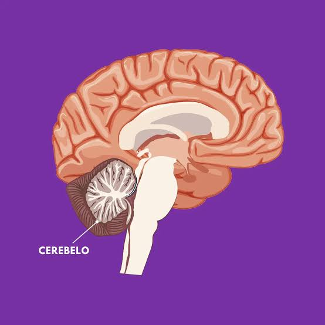

El Cerebelo
1. Ubicación y Generalidades
El cerebelo es la región del encéfalo ubicada en la parte posterior del cráneo, por debajo del cerebro. Ocupa
solo una fracción del volumen total del encéfalo, pero junto con el tronco encefálico es responsable de
simplificar las acciones del cuerpo para que funcione de manera inconsciente y automática.
Es la estructura que facilita acciones cotidianas como conducir, lanzar una pelota, cruzar la calle, tocar el
piano o montar en bicicleta.

2. Funciones Principales
Su función primordial es integrar las vías sensitivas y motoras para permitir movimientos suaves, precisos y
coordinados:
- Coordinación de movimientos voluntarios y precisión de órdenes motoras.
- Mantenimiento del equilibrio y regulación de la postura corporal.
- Coordinación de los movimientos oculares.
- Facilitación del aprendizaje motor.
- Regulación del temblor fisiológico.
- Participación en funciones cognitivas (atención, procesamiento del lenguaje, música y
estímulos sensoriales temporales).
- Implicación en procesos emocionales y del estado de ánimo (en estudio).
|
3. Integración Sensoriomotora
El cerebelo se conecta con otras estructuras encefálicas y con la médula espinal a través de una gran
cantidad de haces nerviosos. Su mecanismo de acción abarca:
- Recepción de información: Recibe datos sensitivos y las órdenes motoras que la corteza cerebral
envía al aparato locomotor.
- Procesamiento y control: Integra toda la información para precisar, regular y controlar dichas
órdenes antes y durante su ejecución.
4. Lesiones e Investigaciones Históricas
Debido a su función integradora, las lesiones en el cerebelo no suelen provocar parálisis, sino desórdenes
relacionados con la precisión del movimiento, la postura, el equilibrio y el aprendizaje motor.
- Siglo XVIII: Primeros estudios en fisiología observaron que los pacientes con daño cerebelar
presentaban fallas en la coordinación motora.
- Siglo XIX: Experimentos de ablación y lesión en animales mostraron movimientos extraños, torpeza,
descoordinación y debilidad muscular, concluyendo que era el órgano del control motor.
- Investigación Moderna: Ha ampliado esta visión demostrando que también interviene de forma activa
en procesos cognitivos y sensoriales más complejos.